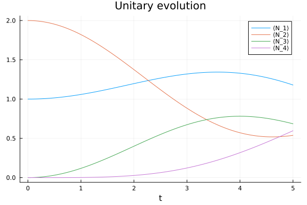
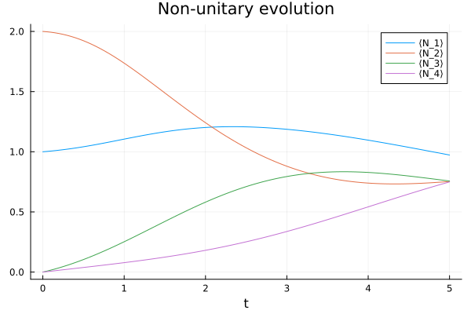

GKSL equation
With the states and operators defined by this package, we can define a Lindbladian operator acting on density matrices, in a typical GKSL equation. Let's take, as an example, a system of (N=4) harmonic oscillators described by the Hamiltonian
\[H= \sum_{n=1}^{N} \omega_n\phantomadj a^\dagger_n a_n\phantomadj + \sum_{n=1}^{N-1} \lambda_n\phantomadj (a^\dagger_n a_{n+1}\phantomadj + a^\dagger_{n+1} a_n\phantomadj).\]
We set up the site indices and the coefficients (to some arbitrary values),
julia> N = 4; s = siteinds("vBoson", N; dim=5);
julia> ω = fill(1.0, N);
julia> λ = fill(0.25, N);
and the initial state such that there's one particle in the first site and two in the second one:
julia> ρₜ = MPS(s, ["1", "2", "0", "0"])
4-element MPS:
((dim=25|id=644|"Site,n=1,vBoson"), (dim=1|id=769|"Link,l=1"))
((dim=1|id=769|"Link,l=1"), (dim=25|id=431|"Site,n=2,vBoson"), (dim=1|id=427|"Link,l=2"))
((dim=1|id=427|"Link,l=2"), (dim=25|id=652|"Site,n=3,vBoson"), (dim=1|id=382|"Link,l=3"))
((dim=1|id=382|"Link,l=3"), (dim=25|id=551|"Site,n=4,vBoson"))
Unitary time evolution
We will evolve the state using the tMPS algorithm, where we break up the evolution operator \(\exp(-\iu tH)\) into smaller factors using a quite rudimental Suzuki-Trotter approximation
\[\exp(-\iu tH) \approx \exp(-\iu tH_{34}) \exp(-\iu tH_{23}) \exp(-\iu tH_{12})\]
where
\[\begin{gather*} H_{12} \defeq \omega_1\phantomadj \adj{a_1} a_1\phantomadj + \lambda_1 (\adj{a_1} a_2\phantomadj + \adj{a_2} a_1\phantomadj) + \tfrac12 \omega_2\phantomadj \adj{a_2} a_2\phantomadj,\\ H_{23} \defeq \tfrac12 \omega_2\phantomadj \adj{a_2} a_2\phantomadj + \lambda_2 (\adj{a_2} a_3\phantomadj + \adj{a_3} a_2\phantomadj) + \tfrac12 \omega_3\phantomadj \adj{a_3} a_3\phantomadj,\\ H_{34} \defeq \tfrac12 \omega_3\phantomadj \adj{a_3} a_3\phantomadj + \lambda_3 (\adj{a_3} a_4\phantomadj + \adj{a_4} a_3\phantomadj) + \omega_4\phantomadj \adj{a_4} a_4\phantomadj. \end{gather*}\]
This decomposition implies a similar decomposition for the commutators, that is
\[\exp(-\iu t [H, \blank]) \approx \exp(-\iu t [H_{34}, \blank]) \exp(-\iu t [H_{23}, \blank]) \exp(-\iu t [H_{12}, \blank])\]
so we can compose the time-evolution operator for our mixed state as follows:
julia> L₁₂ = (
ω[1] * gkslcommutator_itensor(s, "N", 1, "Id", 2) +
λ[1] * (
gkslcommutator_itensor(s, "Adag", 1, "A", 2) +
gkslcommutator_itensor(s, "A", 1, "Adag", 2)
) +
0.5ω[2] * gkslcommutator_itensor(s, "Id", 1, "N", 2)
);
julia> L₂₃ = (
0.5ω[2] * gkslcommutator_itensor(s, "N", 2, "Id", 3) +
λ[2] * (
gkslcommutator_itensor(s, "Adag", 2, "A", 3) +
gkslcommutator_itensor(s, "A", 2, "Adag", 3)
) +
0.5ω[3] * gkslcommutator_itensor(s, "Id", 2, "N", 3)
);
julia> L₃₄ = (
0.5ω[3] * gkslcommutator_itensor(s, "N", 3, "Id", 4) +
λ[3] * (
gkslcommutator_itensor(s, "Adag", 3, "A", 4) +
gkslcommutator_itensor(s, "A", 3, "Adag", 4)
) +
ω[4] * gkslcommutator_itensor(s, "Id", 3, "N", 4)
);
julia> L = [L₁₂, L₂₃, L₃₄];
Now we evolve the state, and at each time step we record its trace and the expectation value (normalised by the trace) of the number operator on all sites. Let's define first some functions to compute the expectation values.
julia> function expect_vec(x::MPS, name::AbstractString)
ev = [dot(MPS(siteinds(x), j -> j == n ? name : "Id"), x)
for n in 1:length(x)]
ev ≈ real(ev) || @warn "Expectation values are not real"
return real(ev)
end;
julia> function trace(x::MPS)
t = dot(MPS(siteinds(x), "Id"), x)
t ≈ real(t) || @warn "Trace is not real"
return real(t)
end;
We will store the results in the columns of a matrix: the i-th column will be \(\tr(N^{(i)} \rho\sb{t})\), while the last will be \(\tr\rho\sb{t}\). We use the decomposition
\[\Phi_t \approx \exp(\tfrac{t}{2} L_{12}) \exp(\tfrac{t}{2} L_{23}) \exp(\tfrac{t}{2} L_{34}) \exp(\tfrac{t}{2} L_{34}) \exp(\tfrac{t}{2} L_{23}) \exp(\tfrac{t}{2} L_{12})\]
to approximate the time-evolution operator \(\Phi\sb{t} = \exp(t(L{12} + L{23} + L_{34}))\) for a time increment \(t\).
julia> dt = 0.05; tmax=5;
julia> evol_seq = exp.(0.5dt .* L); append!(evol_seq, reverse(evol_seq));
julia> nsteps = floor(Int, tmax / dt);
julia> expvals = Matrix{Float64}(undef, nsteps+1, N+1);
julia> tr_ρₜ = trace(ρₜ); expvals[1, :] = [expect_vec(ρₜ, "N") ./ tr_ρₜ; tr_ρₜ];
julia> expvals[1, :] ≈ [1, 2, 0, 0, 1]
true
julia> for step in 1:nsteps
ρₜ = apply(evol_seq, ρₜ)
tr_ρₜ = trace(ρₜ)
expvals[step+1, :] .= [expect_vec(ρₜ, "N") ./ tr_ρₜ; tr_ρₜ]
end
Let's visualise the results using the Plots library:
julia> using Plots
julia> plt = plot(; title="Unitary evolution", xlabel="t");
julia> for n in 1:N
plot!(plt, 0:dt:tmax, expvals[:, n], label="⟨N_$n⟩")
end;

In these examples the trace of the state is always exactly one, as it is preserved by design by the time-evolution method. However it might be useful to monitor it in other situations where the time-evolution algorithm does not have this property.
Adding a dissipation term
Let's also add a thermalisation term on all sites:
\[\dissipator^{(n)} = \rho \mapsto \gamma (\nu_n+1) ( a_n\phantomadj \rho \adj{a_n} - \tfrac12 \adj{a_n} a_n\phantomadj \rho - \tfrac12 \rho \adj{a_n} a_n\phantomadj ) + \gamma \nu_n ( \adj{a_n} \rho a_n\phantomadj - \tfrac12 a_n\phantomadj \adj{a_n} \rho - \tfrac12 \rho a_n\phantomadj \adj{a_n} )\]
where \(\nu\sb{n} = 1/(\eu^{\omega\sb{n}/T} - 1)\) is the average boson number on site \(n\) at temperature \(T\).
julia> γ = 0.5; T = 2;
julia> avgn(ω, T) = 1 / expm1(ω/T);
julia> function D(n)
d1 = (avgn(ω[n], T) + 1) * (
op("A⋅ * ⋅Adag", s, n) -
0.5 * op("Adag⋅ * A⋅", s, n) -
0.5 * op("⋅A * ⋅Adag", s, n)
);
d2 = avgn(ω[n], T) * (
op("Adag⋅ * ⋅A", s, n) -
0.5 * op("A⋅ * Adag⋅", s, n) -
0.5 * op("⋅Adag * ⋅A", s, n)
);
return γ * (d1 + d2);
end;
Notice how we had to write the right-multiplication operators: in order to have \(\rhoXY\), we need to right-multiply first by \(X\) and then by \(Y\), which in ITensor language means that the operator acting on \(\rho\) is op("⋅Y * ⋅X", ...) (which corresponds to apply(op("⋅Y", ...), op("⋅X", ...))) since composition is done in the usual order from right to left.
Now we reset the state to its initial value, and add the non-unitary terms to the time-evolution operator, spreading them equally among the factors.
julia> L₁₂ = (
ω[1] * gkslcommutator_itensor(s, "N", 1, "Id", 2) +
λ[1] * (
gkslcommutator_itensor(s, "Adag", 1, "A", 2) +
gkslcommutator_itensor(s, "A", 1, "Adag", 2)
) +
0.5ω[2] * gkslcommutator_itensor(s, "Id", 1, "N", 2) +
D(1) * op("Id", s, 2) +
op("Id", s, 1) * 0.5D(2)
);
julia> L₂₃ = (
0.5ω[2] * gkslcommutator_itensor(s, "N", 2, "Id", 3) +
λ[2] * (
gkslcommutator_itensor(s, "Adag", 2, "A", 3) +
gkslcommutator_itensor(s, "A", 2, "Adag", 3)
) +
0.5ω[3] * gkslcommutator_itensor(s, "Id", 2, "N", 3) +
0.5D(2) * op("Id", s, 3) +
op("Id", s, 2) * 0.5D(3)
);
julia> L₃₄ = (
0.5ω[3] * gkslcommutator_itensor(s, "N", 3, "Id", 4) +
λ[3] * (
gkslcommutator_itensor(s, "Adag", 3, "A", 4) +
gkslcommutator_itensor(s, "A", 3, "Adag", 4)
) +
ω[4] * gkslcommutator_itensor(s, "Id", 3, "N", 4) +
0.5D(3) * op("Id", s, 4) +
op("Id", s, 3) * 0.5D(4)
);
julia> L = [L₁₂, L₂₃, L₃₄];
julia> evol_seq = exp.(0.5dt .* L); append!(evol_seq, reverse(evol_seq));
julia> ρₜ = MPS(s, ["1", "2", "0", "0"])
4-element MPS:
((dim=25|id=278|"Site,n=1,vBoson"), (dim=1|id=894|"Link,l=1"))
((dim=1|id=894|"Link,l=1"), (dim=25|id=287|"Site,n=2,vBoson"), (dim=1|id=537|"Link,l=2"))
((dim=1|id=537|"Link,l=2"), (dim=25|id=148|"Site,n=3,vBoson"), (dim=1|id=352|"Link,l=3"))
((dim=1|id=352|"Link,l=3"), (dim=25|id=613|"Site,n=4,vBoson"))
Let's start the evolution:
julia> tr_ρₜ = trace(ρₜ); expvals[1, :] = [expect_vec(ρₜ, "N") ./ tr_ρₜ; tr_ρₜ];
julia> for step in 1:nsteps
ρₜ = apply(evol_seq, ρₜ)
tr_ρₜ = trace(ρₜ)
expvals[step+1, :] .= [expect_vec(ρₜ, "N") ./ tr_ρₜ; tr_ρₜ]
end
Here's a plot of the results, obtained in the same way as the another one.
